As a product designer working on Rocket Lawyer’s marketing and e-commerce website, it is simply not possible to draw free forms on a blank Figma frame and hand that over to engineering. Pages on our website were built on a content management system (CMS) called Bloomreach. Everything that website visitor sees is made up of “components” that are editable through a cloud-based internal tool. My job is to design not static pages but the UI structure and functionality of these components.
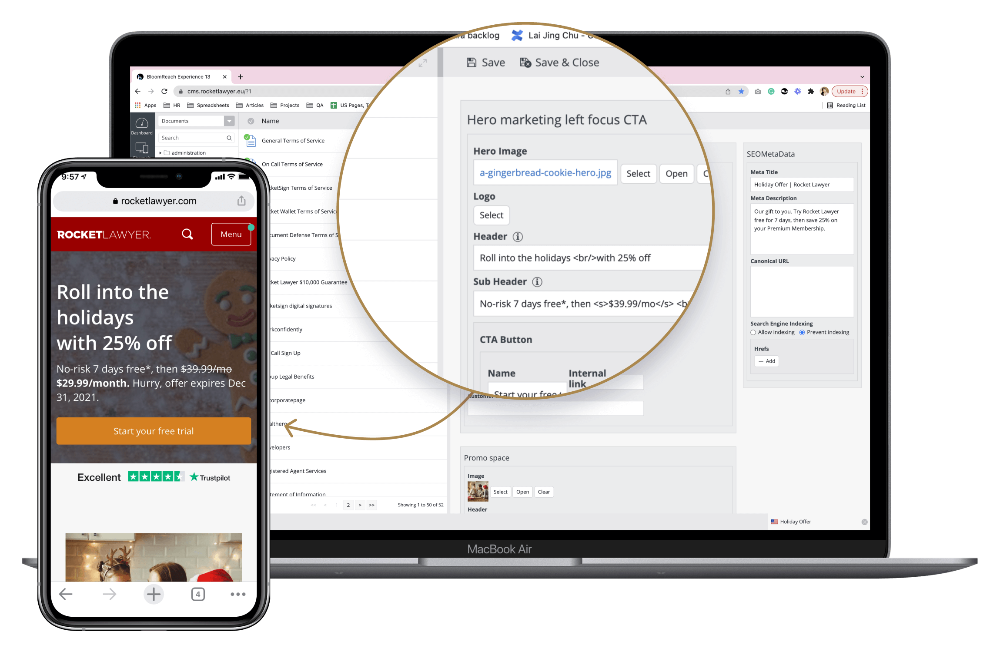
The laptop screen shows the Bloomreach CMS editor's interface of a marketing landing page that utilizes a given template, and the mobile view shows the web page generated from it.
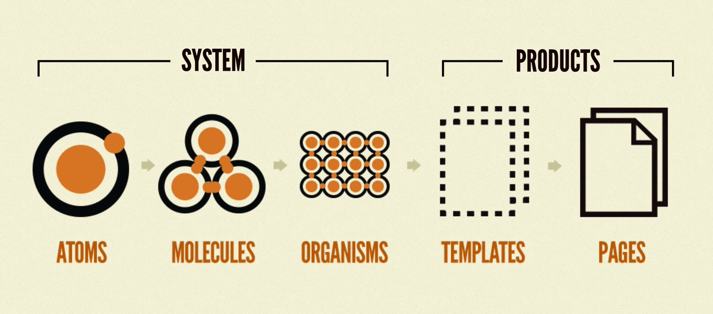
Atomic Design. Image credit: Brad Frost
Above is the famous Atomic Design diagram created by Brad Frost. Looks familiar?
In the case of our CMS, the relationship from atoms to pages was pretty literal, given that our engineers’ output is primarily Bloomreach templates, and our publishing team creates pages.
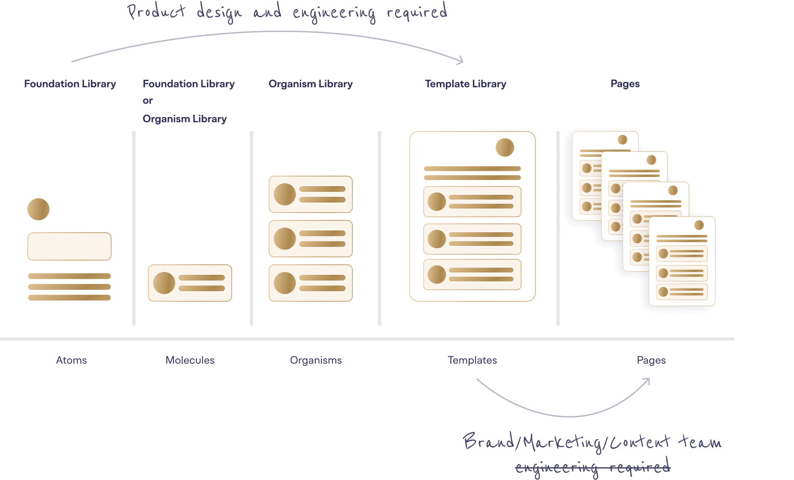
In the context of the Content Engineering team’s work — the template is an engineered product.
While being the product designer for the content engineering team, I owned the Organism Library and the Template Library. Foundation Library which contains the basics like fonts and colors was started and owned by different design teammates.
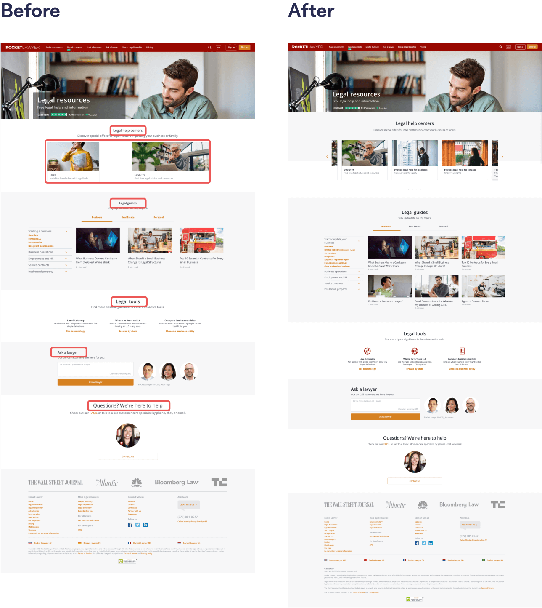
When I first joined, pages on RocketLawyer.com was riddled with stylistic inconsistencies and broken UI, which took a long time to fix since the design system was deprioritized and lacked resourcing.
Before my joining, the content engineers powered ahead migrating pages from the old CMS to the new one without thorough planning and coordination. No one kept track of how and what component was built and how many templates and components there were. This led to duplicated components that looked similar but had different IDs (twins and triplets) which became difficult to manage.
Visual inconsistencies and UI bugs were everywhere. For example, all the H2s on this page were different. As a designer, I had to help play catch up to rectify some of those bugs, and my requests compete with many other equally, if not more, urgent ones in the backlog.
Because many of the expected functionalities of each components were often not fully developed, discrepancies between the built and Figma versions were rife and created confusion amongst the very non-technical stakeholders and collaborators whom the CMS was meant to empower.
The solution to these problems will require the team to pull the breaks and start fixing and consolidating each component individually, treating them as features in and of themselves. But we were met with the following constraints.
This means that unless a change or requested feature for a component is necessary for completing a current project, the engineering task will not get prioritized or fulfilled. (eg. a button should be customizable as either primary or secondary, but because the first design that introduced the component did not call for a secondary button, the team did not develop it.)
This is due to legacy technical architectural limitations faced by our engineering team. The rule of the game for us is that a pre-arranged line-up of components can only be hidden or shown by the editor, but cannot be reordered.
When I first joined the team, I had so many questions. It was not just me — many cross-functional stakeholders had the same questions in mind constantly, and it was causing a lot of roadblocks.
I strongly felt that we needed some sort of a “dashboard” that could give us quick answers whenever we needed them. Suggesting the ideas to the engineers, we started to collaborate on a spreadsheet that could give us that at-a-glance view.
Engineers wrote a script that could generate a full list of page URLs and the templates that controlled them.
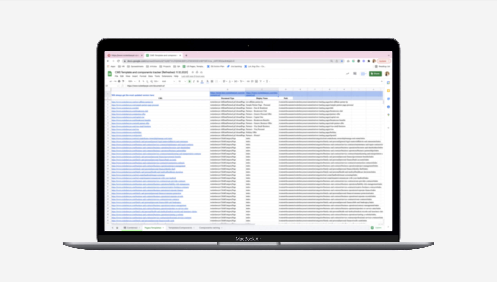
At a glance view of all website pages under Rocketlawyer.com and what template each was generated from
Engineers wrote a script to generate a list of components used within each template.
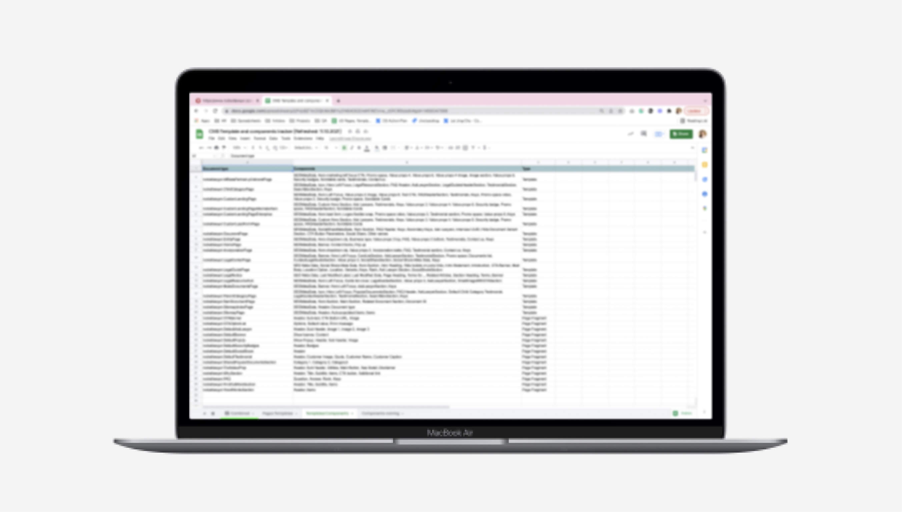
At a glance view of the components involved in each template
Then I created this combined tab in which, at a glance, we can see:
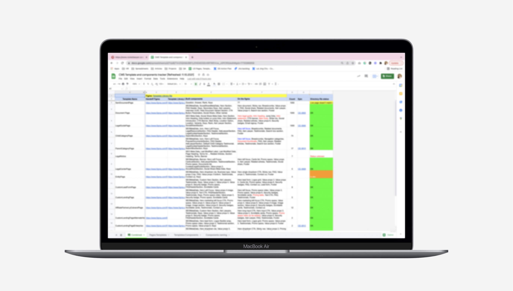
A “combined” view that would give us all the information
We now know that 95% of pages were controlled by only 5 pages, and there are around 30 components—things are not as overwhelming as they might seem. By dividing and conquering, we can leverage each component to improve the quality of the website rapidly.
We now can find out where each component appears.If we wanted to make changes to any of them, the QA can quickly find out which pages will get affected. Instead of using “not knowing what pages might get affected” as a reason to not make an adjustment, now we do know which pages might even be positively impacted, which gives certain tickets more weight and urgency than initially expected.
When I first joined the team, whenever I asked someone what a template looked like, I would be met with blank stares. So the first thing I did was to scour through our Figma directory and dig out all the former template designs and place them into a library file. This template catalog became a source of truth for the team.
Each of the templates were built as master components with smart variants set to our key breakpoints, so that marketing and branding team members can easily create one design on one breakpoint (eg. desktop) and switch them over into mobile view at a click.
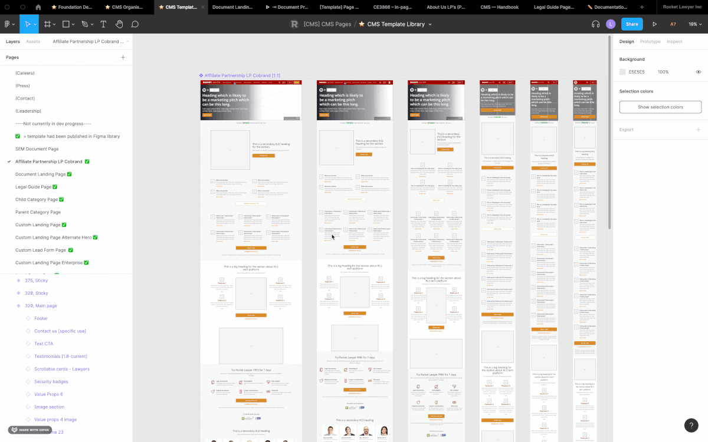
The Template Library
Essentially, each template is a “skewer” of sectional components. Over the course of my time at Rocket Lawyer, I slowly fleshed out most of the components used in these templates.
Each page of this library contains the master components consists of variants that reflect the designs at each key breakpoint, notes and details for design system consumers, as well as the specifications for engineers to refer to as they develop the designs.
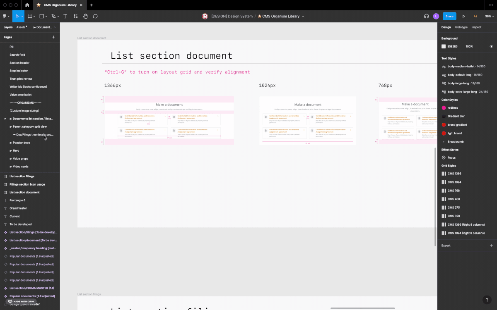
The Organism Library
Each time I hand off a template or component design, I would include the following deliverables to help engineers accurate estimate story points:
Mockups of what the designs would look like on all breakpoints constructed to pixel-perfection. If there are interactive flows and patterns, then a clickable prototype would be included.
Annotated diagrams that call out details that engineers need to pay attention to or that could be easily missed, such as responsive resizing and mouse states.
A list of requirements to be added to the overall acceptance criteria and set the standard for the definition of done.
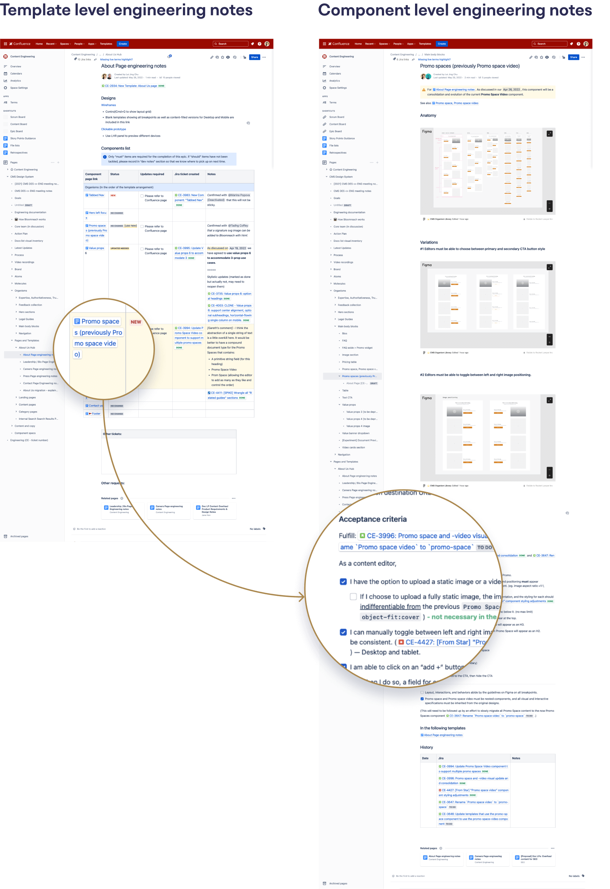
After the template is built, content editors and marketing designers could churn out more pages without the content engineering team involved.
In the new mode of working, marketing designers can simply pull out a template from the Figma library, fill in copy and images, and then immediately convert them to media-responsive designs in a single click. If they have questions about technical limitations, they also have me to help them troubleshoot.
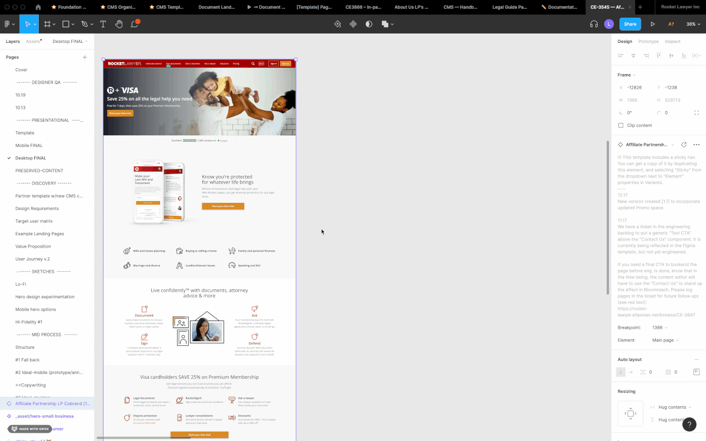
While mocking up page designs, our marketing and brand designers can convert a design from desktop to mobile with one click
Before released onto the production environment, our QA engineer would loop me in to review the engineer’s work. I would then go through the requirements and check them off one by one.
As we were going through these reviews, one of the things we need to make sure is that the change to a component will not negatively impact other templates/pages that also utilizes the same component.
Take the following example. A bug was filed for “Promo space” which already existed but was displaying in the wrong dimension (too small).
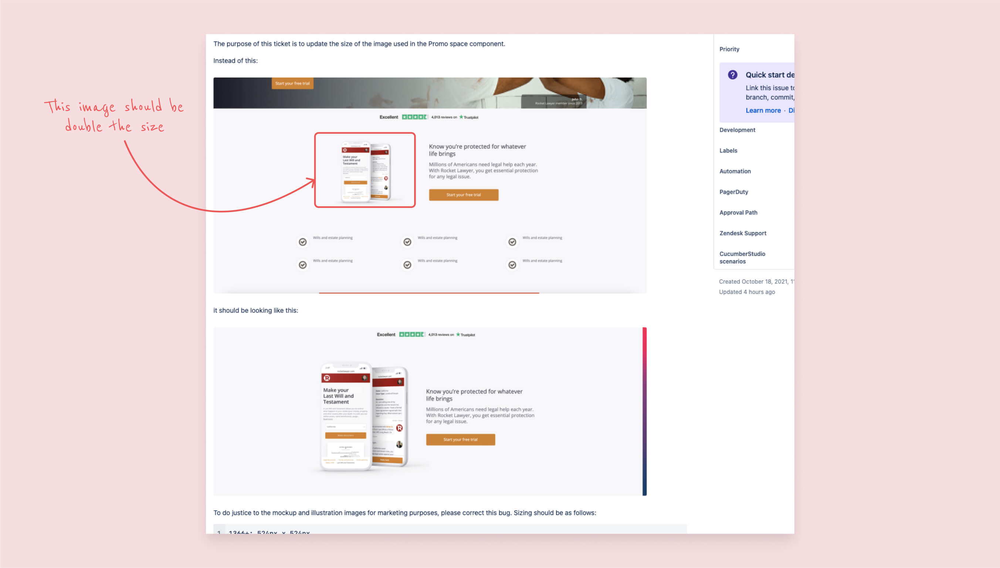
At first, because of how widely used this component is, PMs and Engineers were scared of changing the size, for fear that it would break the design of a different page. In this situation, one thing that came in handy was the component spreadsheet tracker.
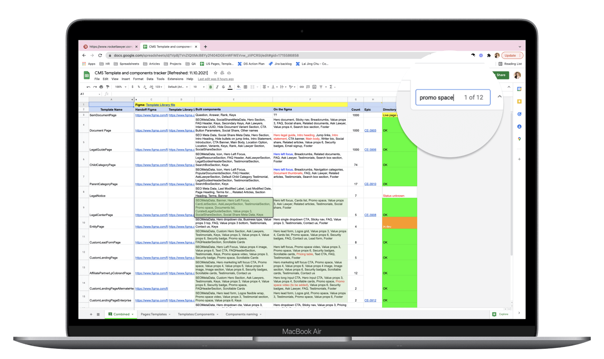
By running a search on “Promo space,” we can easily hunt down all the templates and pages that involves this component
At first, because of how widely used this image component is, PMs and engineers were worried that changing the image size on one page template will break the layout somewhere else without us knowing. In a situation like this, the component spreadsheet tracker came in handy.
Below are examples of pages that benefitted from the image enlargement:
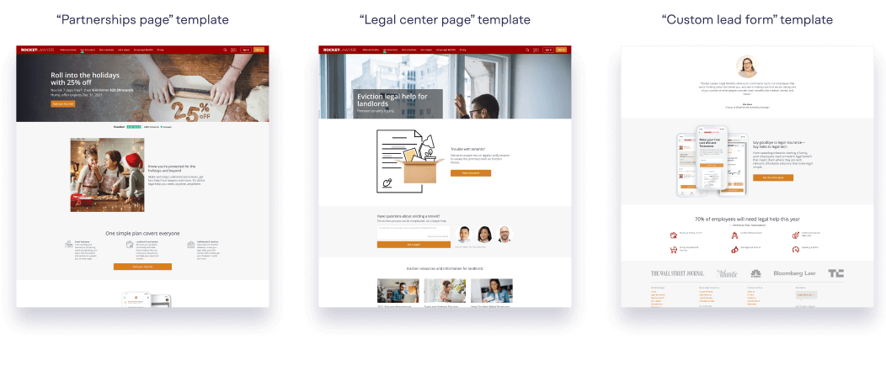
Since we know where all the Promo spaces were located, we could verify that the change would elevate the quality in all instances
By observing at how content editors use Bloomreach, I then realized how important it is to take their user experience into consideration when designing these components.
Take a series of components called “Value props,” for example. When I started at Rocket Lawyer, we had value props 3, 4, and 6. But if you look at the CMS interface, you’d realize that the way content editors add a bullet is by clicking a “+Add” button. There is nothing to stop users from adding more or fewer items than what the component name prescribes.
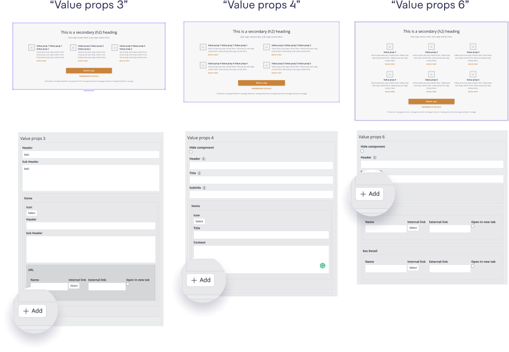
These components all had similar functionality but were made independently from each other, causing constant duplicate work
So it begs the question: shouldn’t we just have one single versatile “value props” to accommodate 2-6 bullets, instead of a separate component for 3, 4, and 6 bullets which is what we have now?

One component called “Value props” should be able to accommodate all of these
By consolidating Value props 3, 4, and 6, engineers could eliminate duplicate work for all future modifications as all of these nested elements have to behave the same way. If their functionalities are not in sync, they will create a lot more confusion for the editor. Engineers agreed with this direction, and work had begun to at least consolidate all these variations.
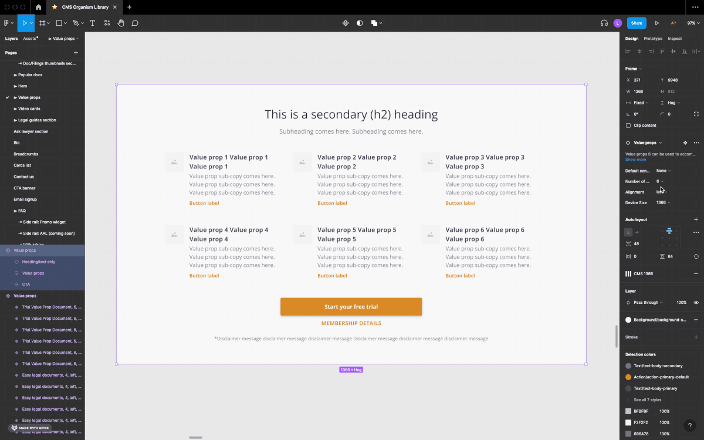
One component to accommodate all use cases to reduce tech debt
Once upon a time, there was a component called “Promo space video” and another one called “Promo space”.
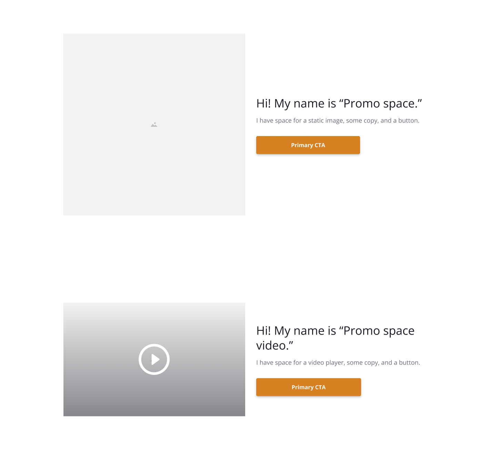
A new template called for multiple “Promo space”-s that comes under one “Promo space video”. After discussion with engineers, we decided to consolidate all three under one component called “Promo spaces” which supports multiple rows of image-and-copy pairings, with the option to override the image with a video player.
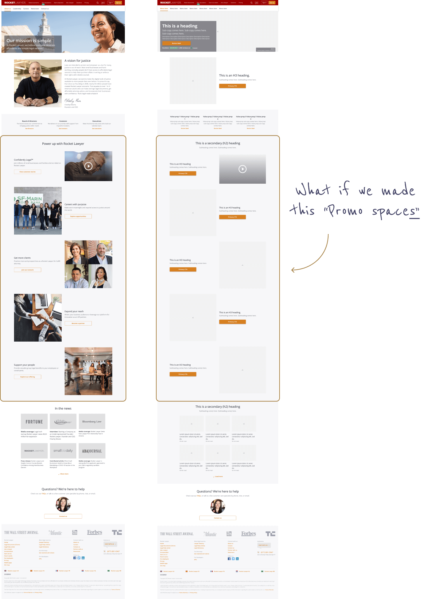
As the change gets applied while building one template for one project, the same capability is applied to all pages, benefiting other projects.
Now, editors and designers have the freedom to add multiple image/video assets and copies in any template where “Promo space” or “Promo spaces” were formally involved. See example:
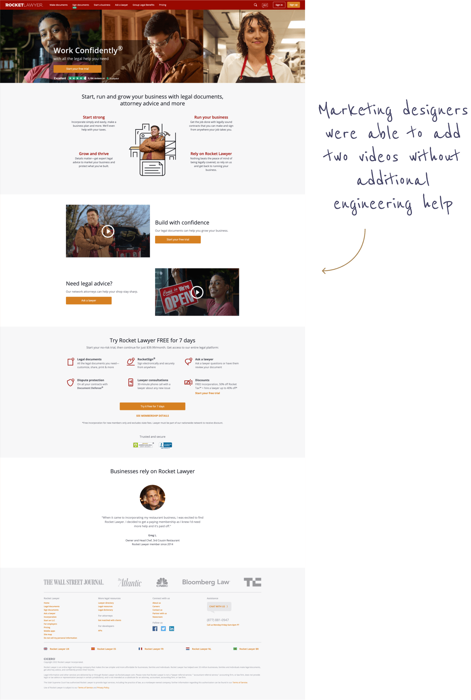
The process of evolving the design system for Bloomreach CMS helped us smoothen the process for cross-functional collaboration behind the development of rocketlawyer.com while also improving product quality. As more functionality gets fleshed out within a few consolidated components, the marketing and brand team can enjoy more creative freedom and flexibility, leading to exponential gains for the whole website. Along the way, I’ve learned:
They deserve processes that are usually reserved for actual product features, such as understanding the pain points, motivations, and behaviors of your users. Since design system users do not have to consult creators when using the components, these assets would inevitably be open for (mis)use which we should anticipate.
Avoid lengthy documentation that no one will read, but instead, create documentation that is intuitive to utilize and that team members feel “they can’t live without.”
There are many small details (such as adding explanation tool tips) that we as designers can advocate for to help team members be more efficient and productive at their jobs. An understanding of the internal tool’s UX is also crucial to structuring, organizing, and naming components properly.
Governance needs continue to prompt us to try out new methods of documentation and communication—synchronously through meetings and workshops, and asynchronously through wikis and Figma comments, handbooks, Loom videos.
I am constantly learning new things about Bloomreach, and trying new ways to reflect those constraints and capabilities in the construction and organization of each Figma master component.
As templates are continue to get updated in code, one of the complaints we hear from marketing and design team members is that the Figma files never 100% reflect the most updated reality of the live templates and that causes confusion. Our next step would be to create “demo pages” directly on Bloomreach so that all users of Bloomreach CMS can instantly see current realities of each template. More to come.
— Matt Fender, Software Engineer at Rocket Lawyer
— Liana Lawrance, Design Manager at Rocket Lawyer


Made in Figma + Webflow by Lai Jing Chu, 2025.
Take a peek at the website style guide.